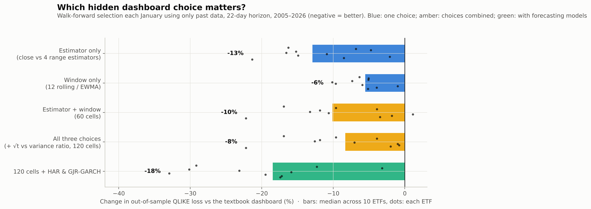
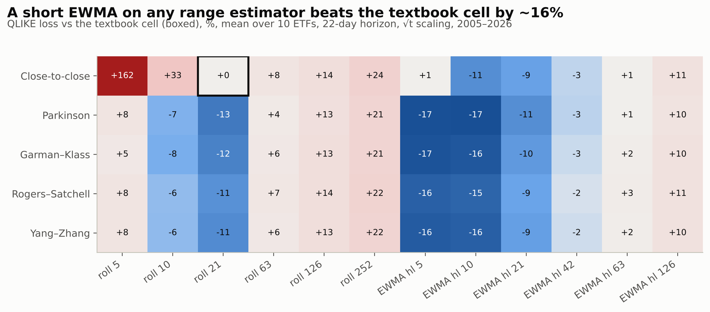
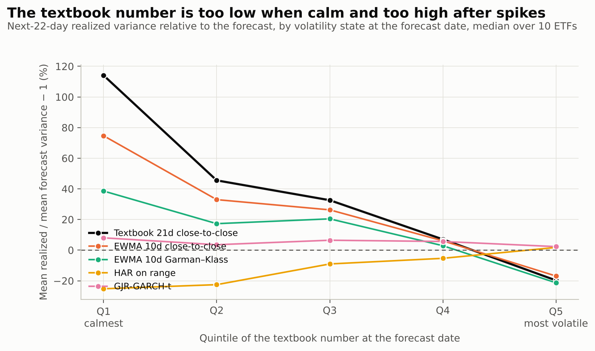
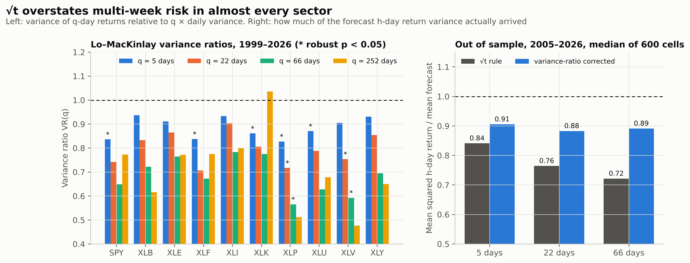
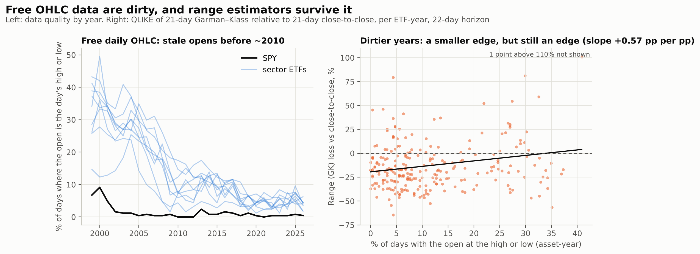
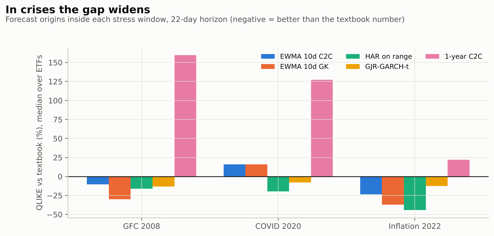

Working paper · Project 02
Three hidden choices behind the "annualized volatility" number, tested out of sample on SPY and nine sector ETFs, 1999–2026
Project 02 of 30 Quant Research Projects · Working paper, November 2026

Almost every returns-and-volatility dashboard shows the same number: the standard deviation of the last 21 daily close-to-close returns, multiplied by √252. People read it as "how risky is this asset going to be". Behind it are three choices that nobody states. The first is the estimator: closing prices only, or the day's open, high and low as well. The second is the window: 21 equally weighted days, or something else. The third is the horizon scaling: the √t rule, which assumes returns are serially uncorrelated.
This paper asks a simple question: which of the three choices matters most for how well the number forecasts the volatility that actually follows, and is the textbook combination ever the right one?
I build every combination of 5 estimators (close-to-close, Parkinson, Garman–Klass, Rogers–Satchell, Yang–Zhang), 12 weighting schemes (rolling windows of 5–252 days and EWMA half-lives of 5–126 days) and 2 horizon scalings (√t, and a trailing variance-ratio correction). That makes 120 dashboard specifications. I add two ablations and three forecasting models as benchmarks (HAR-RV on close-to-close and on range data, and GJR-GARCH-t). Each specification forecasts the next 5, 22 and 66 trading days of realized variance at every trading day from January 2005 to October 2026, for SPY and the nine original SPDR sector ETFs. That gives 54,850 out-of-sample forecast origins per horizon and about 8 million forecasts per horizon. Losses are QLIKE and MSE, tested with HAC Diebold–Mariano tests, Holm corrections, a stationary bootstrap and the Model Confidence Set.
Main findings (22-day horizon unless stated)
An interactive dashboard built from these results (dashboard/index.html) shows the textbook number next to the winning forecasts for every ETF.
A returns-and-volatility dashboard is the first thing most people build in quantitative finance, and the
usual version is a tutorial: download prices, compute returns.rolling(21).std() * sqrt(252) and plot it.
The number then gets used in practice for position sizing, stop distances, VaR and option sanity checks, as
if it were a forecast. It is one, implicitly. So it can be tested like one.
Each part of the textbook formula is a choice with a literature behind it:
What I have not seen is these three choices put in one factorial design, evaluated with the same out-of-sample protocol, so that their importance can be compared directly and against a proper forecasting model. That is the contribution here. The secondary contributions are a measurement of how dirty free daily OHLC data are, and of what that does to range estimators. There is also a result on the √t rule that depends on the loss function, which I did not expect.
Daily variance proxies. For each day, with u = ln(H/O), d = ln(L/O), c = ln(C/O):
| Estimator | Daily proxy | Notes |
|---|---|---|
| Close-to-close (C2C) | r² | the textbook |
| Parkinson (PK) | (u − d)² / (4 ln 2) + o² | range-based |
| Garman–Klass (GK) | ½(u − d)² − (2 ln 2 − 1)c² + o² | range + close |
| Rogers–Satchell (RS) | u(u − c) + d(d − c) + o² | drift-robust |
| Yang–Zhang (YZ) | σ²(o) + kσ²(c) + (1 − k)·mean(RS) | window-level, k from the effective window length |
Every range estimator includes the overnight term o², so all five target the same close-to-close variance. This matters, as ablation A1 shows.
Weighting. Rolling windows of 5, 10, 21, 63, 126 and 252 days, and EWMA with half-lives of 5, 10, 21, 42, 63 and 126 days. For Yang–Zhang under EWMA, the effective sample size (1 + λ)/(1 − λ) sets k.
Horizon scaling. The forecast of h-day variance is either h·σ̂² (the √t rule in variance form) or h·σ̂²·VR̂(h). Here VR̂(h) is a trailing 3-year variance ratio, clipped to [0.5, 2] and shrunk halfway to 1. The shrinkage weight was set before seeing any out-of-sample result and was not tuned.
Ablations (reported, never selected). A1: Parkinson on the intraday range only (no o²), the common dashboard shortcut. A2: GK rescaled each day to the trailing one-year C2C level (keeps GK's timing, imposes C2C's level).
Benchmarks. HAR-RV (Corsi 2009) on daily/weekly/monthly C2C components, and the same HAR on GK + o² components. Both use expanding-window OLS refitted every 22 days, with only targets already observed. The third is GJR-GARCH(1,1) with Student-t shocks, refitted every 22 days on a trailing 2,000-day window and filtered forward daily with fixed parameters in between. Its h-step forecast is the closed form with persistence α + γ/2 + β.
| Walk-forward menu (h = 22) | Median QLIKE change vs textbook | ETFs improved | Holm p < 0.05 |
|---|---|---|---|
| Estimator only (5) | −12.9% | 10 / 10 | 3 |
| Window only (12) | −5.5% | 10 / 10 | 0 |
| Estimator + window (60) | −10.1% | 9 / 10 | 0 |
| Full grid incl. scaling (120) | −8.3% | 10 / 10 | 0 |
| Grid + HAR + GJR-GARCH-t (123) | −18.5% | 10 / 10 | 4 |
The same ordering holds at 5 days (estimator + window −14%, grid + models −17%). At 66 days the window becomes much more important (window only −25%), because a 21-day window is far too short to forecast a quarter. The models dominate there too (−32%). Source: results/wf.csv.
The second line of the table makes the first finding concrete. The textbook 21-day window is already close to the best rolling window. Most of what the window choice can gain comes from switching to EWMA, and it is a small gain. The textbook estimator, though, is the worst of the five on a 21-day window in 9 of 10 ETFs (Rogers–Satchell is worst for XLU), and the worst in 69% of all ETF × window cells. Two further points: selecting from more options did worse (row 4 vs row 1), and every single-ETF improvement is directionally consistent but only a few survive Holm, because one ETF's 22 years of overlapping monthly targets are a small sample.

On the panel, the best cells are a 5–10 day EWMA of any range estimator, between −16% and −17% against the textbook cell. Representative panel tests at h = 22 (mean of per-ETF loss ratios, Holm-adjusted p over 146 tests):
| Specification | QLIKE vs textbook | Holm p | MSE vs textbook |
|---|---|---|---|
| GJR-GARCH-t | −25.4% | < 0.001 | −30% |
| HAR on GK + overnight | −23.6% | 0.52 | −25% |
| HAR on C2C | −22.2% | 1.00 | −24% |
| Parkinson, EWMA hl 5 | −17.2% | < 0.001 | −6% |
| Garman–Klass, EWMA hl 10 | −16.4% | 0.002 | −11% |
| Garman–Klass, rolling 21 | −12.3% | < 0.001 | +9% |
| C2C, EWMA hl 10 (≈ RiskMetrics) | −11.1% | 0.016 | −15% |
| C2C, rolling 63 | +7.7% | 1.00 | +2% |
| C2C, rolling 252 | +24.0% | 1.00 | +3% |
| C2C, rolling 5 | +162% | < 0.001 | +19% |
| A1: Parkinson without overnight, rolling 21 | +43.8% | 1.00 | −24% |
| A2: GK rescaled to C2C level, rolling 21 | −6.6% | 1.00 | −4% |
The HAR models have large average gains but are not significant after Holm. Their losses are much more variable across ETFs and over time than GJR-GARCH-t's. Source: results/panel.csv, results/scores.csv.
The Model Confidence Set is uninformative on single ETFs, which is itself a result. At α = 0.10 it keeps 113–121 of the 123 candidates per ETF, and the textbook is inside it for all ten (MCS p between 0.33 and 0.86). It only reliably rules out the 5-day rolling window and a few 10- and 252-day variants. With overlapping monthly targets, one ETF's history cannot rank 120 similar forecasts. The panel tests and the walk-forward exercise can, because they pool information. Source: results/mcs.csv.

Sorting forecast dates by the textbook reading shows classic regression to the mean. When the last 21 days were unusually quiet, the textbook number (9.2% annualized on average) understates the next month (13.8%) by a third in volatility terms, or +114% in variance (median over ETFs). After spikes it overshoots by 20%. A shorter EWMA halves the calm-state bias and a range estimator halves it again. GJR-GARCH-t, which mean-reverts towards a long-run level by construction, is within 2–8% in every quintile. HAR on range over-forecasts in calm states (−25%). A plausible reason, not tested here, is that its intercept is fitted to C2C targets while its regressors include range data inflated by stale opens (see §5.5). Part of the pattern is mechanical, because sorting on a noisy estimate selects its errors, but that is exactly the error a dashboard reader inherits. Source: results/bias.csv.

Variance ratios on 1999–2026 daily log returns are below 1 for every ETF at 5, 22 and 66 days, with medians of 0.89, 0.80 and 0.68. At 252 days nine of ten are below 1, the exception being XLK (1.04). Individually, the heteroskedasticity-robust Lo–MacKinlay z* is significant (p < 0.05, unadjusted) for 5, 2, 2 and 0 ETFs at q = 5, 22, 66 and 252. The point estimates are consistently below 1 but individually noisy. The effect is stronger in 2013–2026 than in 1999–2012 at long horizons (median VR(252) of 0.50 vs 0.75), which is consistent with sharp V-shaped selloffs such as 2018, 2020 and 2025.
A design correction, disclosed. The pre-registered target, Σ r², makes h·σ² exactly right by construction, so it cannot reward any scaling correction. The √t rule is a claim about the variance of the h-day return. I therefore added, after seeing the first results, a second target: the squared h-day return (Σ r)², which is an unbiased proxy for that variance. The variance-ratio forecasts themselves are unchanged. Against that target:
| Horizon | Realized / forecast, √t | Realized / forecast, VR-corrected | QLIKE, VR vs √t | MSE, VR vs √t |
|---|---|---|---|---|
| 5 days | 0.84 | 0.91 | +0.1% (p = 0.28) | −3.5% |
| 22 days | 0.76 | 0.88 | +1.4% (p = 0.15) | −7.0% |
| 66 days | 0.72 | 0.89 | +3.2% (p = 0.12) | −20.8% |
(Medians over 600 estimator × window × ETF cells; p-values from panel DM tests.) So √t overstates 22-day return variance by about 30% (1/0.76), and the correction removes about half of the bias. MSE, which is dominated by crisis months where reversals are strongest, rewards the correction. QLIKE, which weighs calm months equally and punishes under-forecasts more than over-forecasts, does not. The honest summary is that √t is biased upwards but a naive fix is not a free lunch. Source: results/scaling_return_target.csv, results/variance_ratios.csv.

On a clean, continuously traded series, the open is the day's high or low only occasionally, and SPY shows about 0.7% of days since 2010. The sector ETFs showed it on 25% of days from 1999 to 2009 and 7% since, which indicates opening prints that were stale or set at the previous close. This contaminates exactly the inputs range estimators rely on. In 2005–09 the mean GK proxy exceeds mean squared close-to-close returns by about 15%, where theory and discrete trading would push it slightly below.
Despite this, GK beats C2C (both on a 21-day window) in 77% of ETF-years. Within ETFs, each extra percentage point of stale-open days costs about 0.6 points of that advantage (slope 0.61, naive p = 0.004 with ETF fixed effects, not adjusted for serial correlation). Rescaling GK to the C2C level (ablation A2) does not help. It loses about half of GK's advantage, so the level of the range estimator is less of a problem than its noise. Source: results/gk_vs_c2c_by_year.csv, results/data_quality_by_year.csv.

| Median QLIKE vs textbook | GFC 2008 | COVID 2020 | 2022 |
|---|---|---|---|
| Parkinson, EWMA hl 5 | −48% | −0% | −20% |
| GK, EWMA hl 10 | −30% | +16% | −37% |
| HAR on range | −16% | −20% | −44% |
| GJR-GARCH-t | −13% | −8% | −12% |
| C2C, rolling 252 | +160% | +127% | +22% |
COVID is the one window where short EWMAs did not beat the textbook. The shock arrived in days and reversed within weeks, so fast estimators overshot on the way down. The 1-year window, a common "long-term risk" setting, is the worst choice in every crisis. Source: results/stress.csv.
pip install -r requirements.txt
python src/fetch_data.py # optional: re-download (the committed CSV is the exact input used)
bash run_all.sh # tests, ~8M forecasts, all tables, figures and the dashboard (10–25 min, 4 cores)
The intermediate forecast files (results/forecasts_h*.npz, about 140 MB) are not committed. Every table
in this paper is in results/ as CSV.
02-volatility-dashboard-audit/
├── README.md this paper
├── data/sector_ohlc_features.csv
├── src/estimators.py daily proxies, weighting schemes, variance-ratio scaling
├── src/forecast.py 120 dashboards + ablations + HAR / GJR-GARCH-t, every origin
├── src/evaluate.py losses, walk-forward selection, DM/Holm, bootstrap, MCS, VR tests
├── src/figures.py Figures 1–6
├── src/dashboard.py interactive dashboard (dashboard/index.html)
├── src/fetch_data.py data download
├── tests/test_core.py estimator bias/efficiency on simulated paths, no-look-ahead, inference code
├── results/ every number in this paper as CSV
└── figures/